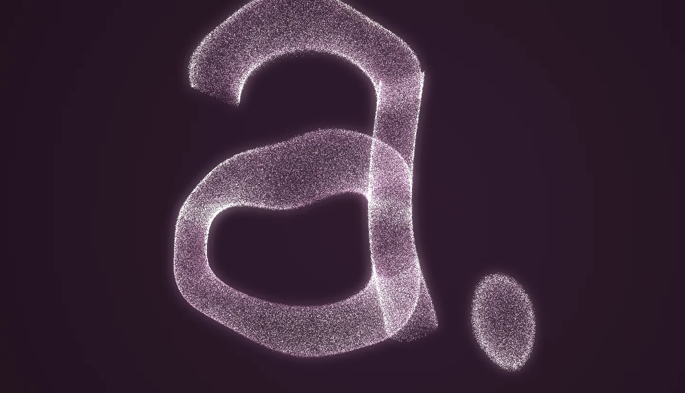

The simulation runs a million particles on the graphics card through WebGL2 render-to-texture, which this browser does not offer. Here is a still of the default design, the mark assembling from a scatter. The code and the presets are readable on a device with WebGL2.

Everything stays on your device: no uploads, no analytics, no accounts.